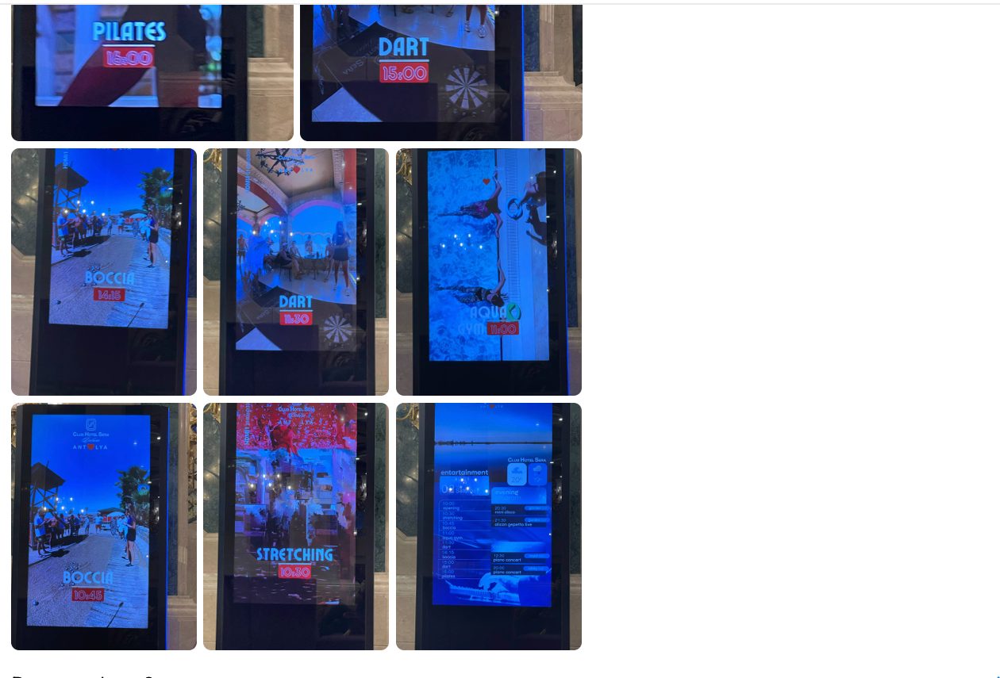
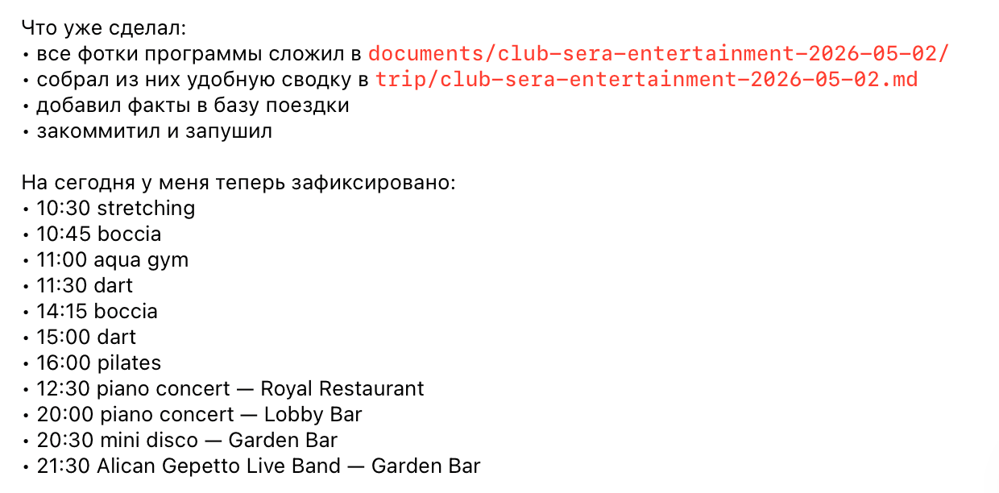
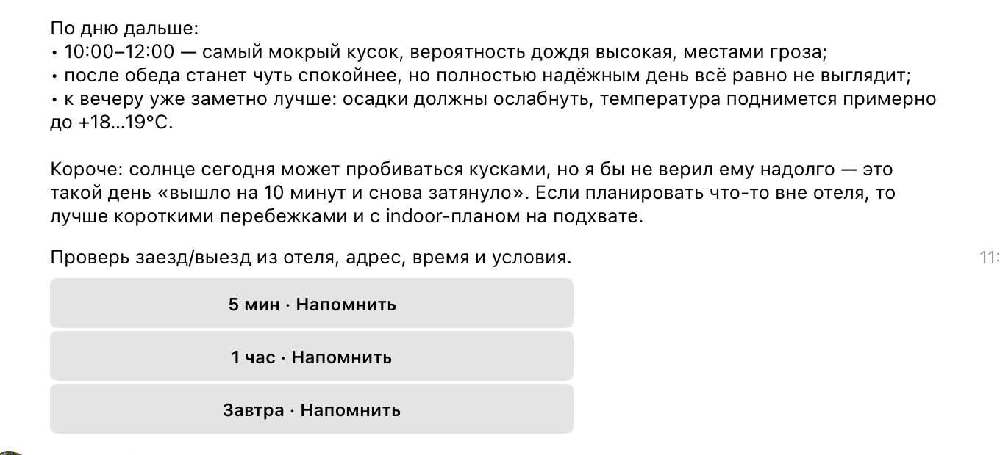
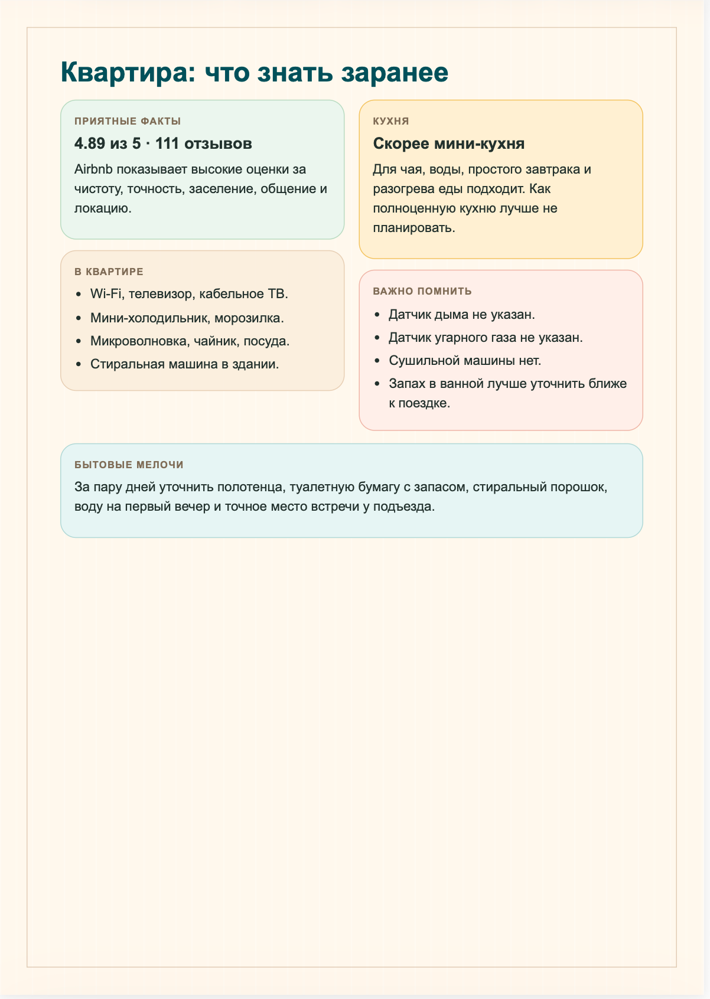
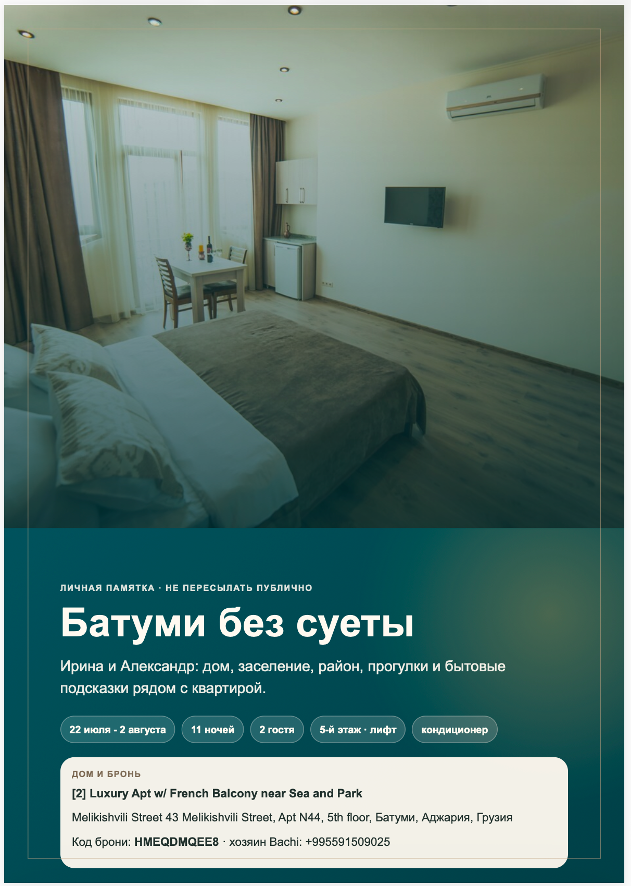

00:58Инструменты для сбора транскриптов и метаданных с YouTube
01:34Корпус из 24 → 50 видео: выжимки + общий индекс по теме
02:10NotebookLM: синхронизация корпуса до 50
06:47Веб-ресёрч по пробелам: синтез 154 источников
07:12✓ готово
24
коммита за ночь
6ч 14
с 00:58 до 07:12
50
видео разобрано
154
веб-источника
Блок 1 · Водораздел
Чат советует — агент делает
Чат
AI
Только текст. Дальше — руками.
Агент
тянется к реальным инструментам
AI
Browser
Files
Terminal
API
CRM
Блок 1 · Водораздел
Два слова, без которых дальше никак
Файлы = память агента
контекст лежит на диске, переживает сессию
AGENTS.md / CLAUDE.md = должностная инструкция
текстовый файл, где написано как агент себя ведёт
# AGENTS.md
## Цель проекта: репозиторий готовит внутренний доклад для ДВП-отдела
## С чего начинать: для любой работы с докладом сначала читай HANDOFF.md и deck-full.md
## Правила работы:
- свободный текст пиши по-русски
- не меняй структуру 13 тем без просьбы
Блок 1 · Водораздел
«Большинство задач в Codex уже некодинговые.»
Глава Codex, OpenAI
ФактNVIDIA: Codex развёрнут на 10 000+ сотрудников - юристы, маркетинг, финансы, HR
Блок 2 · Демо
Jira → отчёт голосом
Без выгрузок. Без SQL. За несколько минут.
Демо · Jira
Утренний стендап: один голосовой запрос
«Перед стендапом: найди задачи In Review, переведи просроченную в Done, добавь комментарий "завершено в срок", дай отчёт.»
Скринкаст · записан заранее · ускорен ×2–3 · без звука · клик по видео — на весь экран
Kanban KAN→тикет In Review→статус Done→комментарий→make_dvp.py→card.htmlнесколько минут
Демо · Jira
Портфель проектов - одной командой
Проект
Задач
Багов
План (ч)
Факт (ч)
%
Статус
base
27
3
140
128
91%
In Progress
refactor-api
14
1
80
52
65%
In Progress
dvp-report
8
0
40
40
100%
Done
Тот же агент, другой шаблон вывода · данные - обезличенный демо-тенант KAN
Под капотом
Агент сам выбирает, где идти
Браузер (UI)
Там, где нужен человеческий путь
1Открыл Kanban-доску KAN
2Нашёл тикет с ближайшим дедлайном
3Сменил статус на Done
4Написал комментарий «завершено в срок»
API (REST)
Там, где быстрее напрямую
5JQL-запрос: задачи проекта base
6Агрегация worklog: план / факт / %
7Рендер card.html - готов отчёт
Один голосовой запрос↓Агент выбирает путь↓10 секунд - отчёт готов
Тенант KAN · 27 задач · ~128 ч worklog
Демо · Slides
EXT · расширенная версия
Месячный отчёт → Google Slides
Jira → категоризация → capacity → Slides API
скринкаст · записан заранее · клик по видео — на весь экран
Блок 3 · Проектирование
Один контракт - четыре агента
Источник правды
AGENTS.md
Claude Code
исполнитель в репозитории
Codex
независимый аудит и второе мнение
Gemini CLI
дешёвая разведка больших контекстов
Copilot
автодополнение в IDE
CLAUDE.md = @AGENTS.md + особенности агента. Не залочен на вендора. git worktrees для изоляции.
crontab коммитит ~/.claude автоматически, без моего участия
Откат и diff бесплатно
git log, git diff, git revert - стандартные инструменты разработки
«правила, а не факты»- факты устаревают, правила живут.
Блок 3 · Дисциплина
Три привычки, без которых агент врёт
1
Режим планирования до действия
Не даю агенту сразу делать - он показывает план, я правлю. Потом он делает.
2
Research-first: сначала разведка
Сначала разведка контекста (читает файлы, историю, ошибки), потом изменения.
3
Слабая модель по умолчанию
В начале плана прописываю: рутину делать на Sonnet/Haiku, тяжёлую модель звать точечно. Быстрее и стабильнее.
Блок 4 · Ширина
Один движок: ночью - быт, днём - рабочие отчёты
Не один удачный фокус - одна система с измеримым результатом.
Блок 4 · Ширина
OpenClaw: фоновый штат
5
агентов на сервере
8
cron-задач без человека
17:30
Агент логинится в браузере, проверяет трекинг посылок, скриншот в Telegram
10:00
Остаток кредитов Google Cloud - алерт если мало
03:00
Зашифрованный бэкап
всегда
Голос→текст для входящих голосовых (Groq Whisper)
30 мин
git-синк заметок, инструкций, памяти
Из 8 задач: 5 - инженерная гигиена, 3 - чистый быт. Один планировщик тянет «закоммить код» и «где моя посылка».
Блок 4 · Ширина
Васёк в Турции: отпуск внутри Telegram
Погодные брифинги по точкам маршрута
Напоминания с inline-кнопками, snooze голосом
База знаний по отелю: рестораны, бары, расписания
Фото афиши дня → 12 напоминаний с таймерами
Разбор документов: билеты, страховки, ваучеры
Зеркало поездки в Notion
Живая деталь · аэропорт Rize
Голосом: «когда идти на посадку?» Вылет 21:55 → к стойке к 21:10. Бот посчитал cut-off: «выходи из кафе сейчас».
фото табло активностей → агент разобрал в расписание

→

погодный брифинг и напоминания приходят с кнопками прямо в чат

Не поиск в гугле - посчитанный ответ под мою ситуацию.
Вне деки · Быт
Wolt: агент готовит - я жму Pay
Три категории:ЕдаПродуктыАптека
Агент только смотрит: ищет, сравнивает, ранжирует по моей истории заказов
Корзину не собирает, оплату не жмёт - это всегда я
Полный сравнительный прогон - ~3,5 сек
Личный фидбек перебивает площадку
Заведение с публичным рейтингом 9.2 я оценил на 3. Агент навсегда опустил его в моей выдаче.
Граница одна: агент готовит, кнопку «оплатить» жму я.
Вне деки · Быт
iHerb: сначала «а надо ли», потом «что именно»
1Безопасность
Честный ответ: нужна ли тебе вообще эта добавка - не сдать ли сперва анализы.
→
2Товар
Только если есть смысл: состав, дозировка, цена, готовая корзина.
Агент пишет свои решения в журнал - чтобы не советовать одно и то же заново.
Это поддержка решения, а не назначение врача - корзину подтверждаю сам.
Вне деки · Быт
Жильё родителям: не десять форм, а один разговор
Проговариваешь требования словами - не заполняешь десять форм на десяти сайтах:
РайонБюджетЭтажЧто важно родителям
Агент собрал выборку, отфильтровал, сложил в один PDF: гайд по району + шорт-лист квартир
Решение «ехать смотреть или нет» - за людьми
Это не замысел, а готовый результат


готовый PDF: гайд по дому и району
Один паттерн, три задачи, одна граница: агент доводит до выбора - оплачиваю я.
Блок 4 · RTK
RTK - прокси, который сжимает вывод служебных команд агента
8970
команд прошло через RTK
725.1M
токенов сэкономлено
99.2%
экономии на каждой команде
Тот же движок одинаково тянет и код, и быт. Агент работает помногу - гигиена расходов окупается.
Блок 5 · Роли
«Whoever does the work does the learning.»
Принцип балансаДелегируй рутину - не отдавай понимание. Иначе разучишься.
Блок 6 · Приёмы
Не надо быть инженером. Надо освоить 4-5 приёмов.
Приём 1 · Голос
Голос вместо клавиатуры
Я почти не печатаю задачи - я их проговариваю. Дело не только в скорости набора. Голосом за 1 минуту наговариваешь столько контекста, сколько руками печатал бы 10 минут. А агенту контекст нужен больше всего. Идея пришла на ходу - надиктовал, агент сам положил в заметки. Множитель, который чувствуется в первый же день.
1 мин
голосом
=
10 мин
руками
Инструменты:WWispr Flow (мой выбор)SSuper Whisper (для Mac)HHandy (бесплатно)
Приём 2 · Навыки
Описал процесс один раз - переиспользуешь бесконечно
«Do it once, then skill it»
Свой AGENTS.md-навык = своя экспертиза, оцифрованная. Вызываешь по имени - агент повторяет точно и без пропусков.
Приём 3 · Расписание
Сводка приходит, пока спишь
Утром
Дайджест задач, алертов и изменений уже готов - до первого кофе
Ночью
Бэкап, git-синк, аудит лимитов - без тебя, по расписанию
Каждый день
Отчёт, паспорт проекта, мониторинг - просто существуют
Приём 4 · Параллельность
Ты дирижируешь, а не гребёшь
Несколько агентов одновременно: каждый в своей задаче, ты видишь всю картину.
Ты
тимлид
Агент A
анализ
Агент B
рефакторинг
Агент C
тесты
Приём 5 · Второй мозг
Созвоны → транскрипт → задачи → ритм недели делаю сейчас
Захват
Plaud Desktop / системный звук
Транскрипт
Whisper / автоматически
Саммари
Claude API / структурирует
Задачи
нарезает сам / с контекстом
Ритм недели
агент видит нагрузку + биометрику
Любой источник - Plaud, запись Zoom, локальный файл - нормализуется в общий формат. Второй мозг не зависит от одного приложения.
Блок 6 · Память
Облако · Соломинка
Агент тянет информацию через узкий канал - только то, что успело войти в контекст
vs
Локально · Библиотека
Агент берёт нужную книгу с полки и видит соседние - весь контекст рядом
«В облаке агент тянет инфу через соломинку. Локально - как в библиотеке: берёт книгу с полки и видит соседние.»
Charlie Cowan
Блок 7 · Здоровье
Крайняя точка диапазона
Свой baseline, а не средние по больнице
Whoop + Apple Health → health-guardian. Агент учит baseline именно твоего организма и ловит аномалии: скачок HRV, деградация сна, признаки температуры. Утром - брифинг по восстановлению. Честно: это сигнал, не диагноз. Серьёзное - к врачу.
376K
записей Apple Health
30 дней
на baseline (скользящее окно)
Без облака и телеметрии
Блок 8 · Честная часть
Про грабли расскажу я сам
Если минусы называю я - остальному можно верить больше.
Грабля 1 · Отдача
«Для занятого прагматика отдача от вложений пока отрицательна: на доводку уходит больше времени, чем приносит сам результат.»
Это нормальная фаза. Её просто надо пережить. Не значит, что не работает - значит, что входишь.
Грабля 2 · Демо-культура
«99% видео... это полнейший булшит. Я называю это продуктивити-порно.»
Это касается и моего доклада. Поэтому я показываю работающее на своей машине, а не красивые рендеры.
Грабля 3 · Человек
AI brain fry: усталость от надзора, а не от работы
1488
сотрудников - BCG, исследование масштаба
3
инструмента - пик. 4-й агент уже роняет эффективность
+39%
критических ошибок у перегруженных - слепо пропускают дефекты
7-10%
времени - здоровая доля ИИ в рабочем дне
Источник: BCG, исследование 2024.
Грабли в голове, не в технике
Две проблемы, которые я ловлю за собой
1Лень
Агент написал план, задал вопросы, выдал результат - а ты по диагонали проскроллил и нажал «ок». Так пропускается всё.
2Ответственность
«Агент умный - он отвечает за результат». Нет. По умолчанию он делает средне - «среднячок по больнице». За то, чтобы вышло хорошо, отвечаешь ты.
Лекарство из практики: если один агент собрал материал и сам же сделал вывод - расхождение пропустишь. Поэтому важный вывод отдаю на независимую проверку второму агенту перед тем, как принять.
Безопасность
Чужой навык - это исполняемый код, который запустится на вашей машине
Ставь только из доверенных источников
Читай, что внутри, перед установкой
Особенно опасны навыки, которые ходят во внешние URL - туда можно подсунуть вредную инструкцию (prompt injection)
Чужой навык = чужой код на твоём компьютере. Та же осторожность, что с npm-пакетами.
Базовая гигиена
Правила, без которых работать с агентом опасно
Галлюцинации бывают
Агент иногда уверенно врёт. Проверяй важное по источникам.
Нет кнопки «отменить»
После деструктивного действия - нет undo. Git помогает, но не всегда.
Читай весь diff
Не глазами по диагонали. Агент мог изменить то, о чём не говорил.
Секреты вне папок агента
API-ключи, пароли, токены - агент не должен их видеть без нужды.
Удаление - руками
rm, DROP TABLE, форматирование - делай сам после проверки.
Критичное - руками
Агента изолируй от продакшена. Read-only по умолчанию - хорошая привычка.
Блок 9 · Старт
Минимальный набор, чтобы начать
Claude Code / Codexосновной агент
Wispr Flow / Handyголосовой ввод
Сервер (OpenClaw)опционально, позже
Бюджет
~$20
в месяц, на базовом уровне
Где уходят деньги:Opus vs Sonnet ~5xFast mode 2xКонтекст >200K 2x
Рутину - на дешёвой модели. Тяжёлую звать точечно. Это и быстрее, и стабильнее.
Финал
Начало доклада
Доклад собрал агент за одну ночь
24 коммита · 6ч 14мин · пока я спал
+
Демо
Jira-отчёт голосом за 10 секунд
Без выгрузок · Без SQL · Канбан → HTML
=
Между вами и этим
Один вечер и разрешение себе попробовать
Инструмент со словом «код» в названии ждёт именно вас - тех, кто код не пишет.
Спасибо.
QR
Шаблон + одностраничный чеклист
Q&A
Насколько далеко от кода
1
Быт
2
Ресёрч
3
Браузер
4
Самообслуживание аналитикой
5
Методология
Карта всего доклада одной шкалой.
Q&A
Как агент устроен внутри
1
Контекст
2
План
3
Действие
4
Проверка
↻
И снова
Чат
Прямая линия
vs
Агент
Круг
Q&A
Память - это файлы
Задача
/папка
→
AGENTS.md
должностная инструкция
skills/
навыки
MEMORY.md
журнал решений
Память лежит в файлах, не в облаке. git - это история памяти.
Q&A
Ресёрч и документы
Слой 1 · готовые сервисы
PerplexityGeminiChatGPT (платный)
Слой 2 · свой навык
deep-research
3 бэкенда: сначала прямые запросы, потом fallback
Проверка квоты перед запуском
Выгрузка в Google Docs за сессию
Второе мнение
NotebookLM
Отчёт без источников помечаю слабым.
Q&A
10 разобранных мифов
нет
«В Claude Code по умолчанию самая мощная модель»
нет
«Чем короче запрос, тем лучше» - агенту нужен контекст
спорно
«Окно на миллион токенов держит весь монорепозиторий без потерь» - дальше 200K цена удваивается, связи в контексте сползают
Смотри не на цифру из пресс-релиза, а на дату, источник и на то, что меряли.